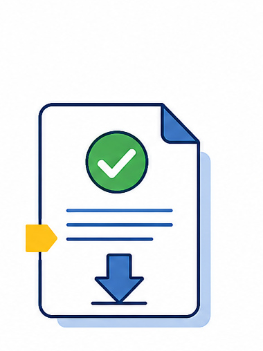
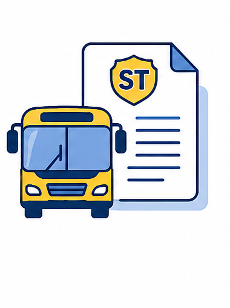

Expida el permiso de su hijo o hija de forma digital, gratuita y sin registro. Con el formato oficial de la Superintendencia de Transporte, válido ante empresas de transporte terrestre en el país.
Base legal: cuando un menor viaja sin sus padres o tutor legal, la empresa transportadora debe verificar un permiso escrito (ABC de la Superintendencia de Transporte). Permiso Digital lo genera con el formato oficial, listo para firmar.
Selecciona la transportadora con la que viaja el menor, o usa el formato genérico.
Del menor, de quien autoriza, del viaje y de quién recibe al menor en el destino.
Quien autoriza firma directamente en la pantalla del celular o con el mouse.

Obtienes el permiso en una sola hoja, listo para imprimir y presentar.
Código de la Infancia y la Adolescencia. Regula el permiso de viaje para menores en Colombia.
Protección de datos personales. El MVP no recopila ni almacena tu información: todo ocurre en tu dispositivo.
Reconoce la firma electrónica en Colombia. La autorización firmada digitalmente tiene validez legal.

Formato sugerido por la Superintendencia de Transporte para la autorización de viaje de NNA.
Gratis · Sin registro · Válido para viajes terrestres nacionales